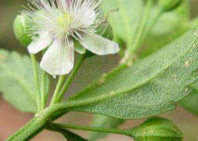

Specie: Glycyrrhiza uralensis
Taxonomy: Fabaceae; Papilionoideae; 50 kb inversion clade; NPAAA clade; Hologalegina; IRL clade; Galegeae; Glycyrrhiza
Abbr: Gur
Level: Chromosome
chromosome number: 2n=2X=16

Introduction: Glycyrrhiza uralensis, also known as Chinese liquorice, is a flowering plant native to Asia. It is used as a sweetener and in traditional Chinese medicine. Liquorice root, or 'radix glycyrrhizae', is one of the 50 fundamental herbs used in traditional Chinese medicine, where it has the name gancao (kan-tsao; Chinese: 甘草, pinyin: gāncǎo). It is used in Chinese medicine to harmonize other herbs and to reduce the harsh effects of other herbs. It is usually collected in spring and autumn, when it is sliced and sun-dried, then either used unprepared or stir-baked with honey. Liquorice root is most commonly produced in the Shanxi, Gansu and Xinjiang regions of China.
Distribution: Afghanistan, Altay, Buryatiya, China North-Central, Chita, East European Russia, Inner Mongolia, Irkutsk, Kazakhstan, Kirgizstan, Krasnoyarsk, Manchuria, Mongolia, Northwest European R, Pakistan, Qinghai, South European Russi, Tadzhikistan, Tuva, West Siberia, Xinjiang
Article Title: Chromosome-scale genome assembly of Glycyrrhiza uralensis revealed metabolic gene cluster centred specialized metabolites biosynthesis
Data source: All sequencing datasets generated in this study have been deposited in the DDBJ database (Experiment: DRX386007–DRX386008; Run: DRR400303–DRR400304) under the BioProject id PRJDB14223, submission id DRA014720, BioSample: SAMD00521547. The genome sequence of G. uralensis strain 308-19 has been public under the accession ids BRZY01000001–BRZY01000089. All datasets generated and discussed in this study are available as a supplementary dataset in this manuscript. The pathway database for G. uralensis, used for metabolic gene cluster analysis and biochemical pathway visualization, can be downloaded from our GitHub repository—https://github.com/amit4mchiba/Glycyrrhiza-uralensis-strain-308-19-genome. All scripts, supplementary datasets, and intermediate files generated from this study have been deposited to our GitHub repository (link mentioned above).